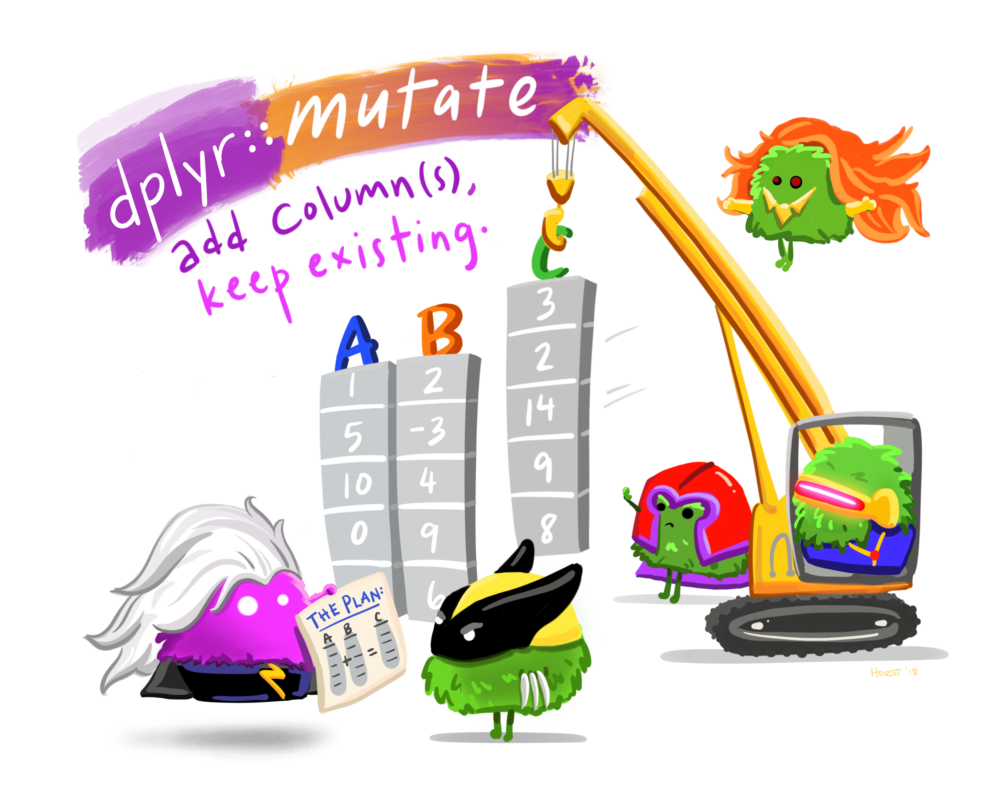

# a
arrange(med_mass_flipper_ratio)
# b
group_by(species)
# c
penguins
# d
summarize(
med_mass_flipper_ratio = median(mass_flipper_ratio)
)
# e
mutate(
mass_flipper_ratio = body_mass_g / flipper_length_mm
)Data Wrangling with dplyr
0.1 Learning Targets
When you are finished with the readings and videos, you should be able to…
Describe to someone what a function conflict is
Describe to someone the similarities and differences between a
list, adata.frame, and atibbleIdentify the structure of an object
Identify the data type(s) of an object
Describe to someone what the tidyverse is
Use three of the five main dplyr verbs:
filter()arrange()select()
Use the pipe operator (
|>or%>%) to chain together data wrangling operations
📖 Readings: 60 minutes
💻 Activities: 30-45 minutes
✅ Check-ins: 1
1 Part One: Learning More about Packages, Data Types, and Objects
NoteRemoving messages from your HTML file
To remove the package loading / data loading messages, you have two options:
- Globally turn off all messages by specifying
message: falseas anexecuteoption in your YAML - Locally turn off messages for a specific code chunk by specifying
#| message: falseas a code chunk option
1.1 Learning More about Data Types & Objects in R
In addition, read the following section from the first edition of R for DS:
1.2 ✅ Check-in: Data Structures
Question 1
In essence, a data.frame is simply a special list - with a few extra restrictions on the list format.
Think about the datasets you have already worked with. Which of the following restrictions on a list do you think are needed for the list to be a data.frame? (Select all that apply)
- The elements of the list must all be vectors of the same length.
- The elements of the list must all be the same data type.
- The elements of the list must all have no missing values.
- The elements of the list must all have names.
Question 2
Tibbles are described as “opinionated” dataframes. Which of the following are true about a tibble’s behavior? (Select all that apply)
tibbles only print the first 10 rows of a datasettibbles allow for non-syntactic variable names, like:)tibbles never convert strings to factorstibbles create row names
2 Part Two: Wrangling data with dplyr
2.1 Introduction to dplyr
2.2 dplyr Verbs


2.3 Practice
💻 Required Tutorial: Practice with dplyr
2.4 ✅ Check-in: Data Wrangling
Question 1: Suppose we would like to study how the ratio of penguin body mass to flipper size differs across the species. Arrange the following steps into an order that accomplishes this goal (assuming the steps are connected with a |> or a %>%).
TipTry running the code!
You can check your answers using the penguins data from the palmerpenguins R package!
Question 2:
Consider the base R code below.
mean(penguins[penguins$species == "Adelie", ]$body_mass_g)For each of the following dplyr pipelines, indicate which of the following is true:
- It returns the exact same thing as the (above) base R code
- It returns the correct information, but the wrong object type
- It returns incorrect information
- It returns an error
# Part a
penguins |>
filter("body_mass_g") |>
pull("Adelie") |>
mean()
# Part b
penguins |>
filter(species == "Adelie") |>
select(body_mass_g) |>
summarize(mean(body_mass_g))
# Part c
penguins |>
pull(body_mass_g) |>
filter(species == "Adelie") |>
mean()
# Part d
penguins |>
filter(species == "Adelie") |>
select(body_mass_g) |>
mean()
# Part e
penguins |>
filter(species == "Adelie") |>
pull(body_mass_g) |>
mean()
# Part f
penguins |>
select(species == "Adelie") |>
filter(body_mass_g) |>
summarize(mean(body_mass_g))
TipTry running the code!
You can check your answers using the penguins data from the palmerpenguins R package!